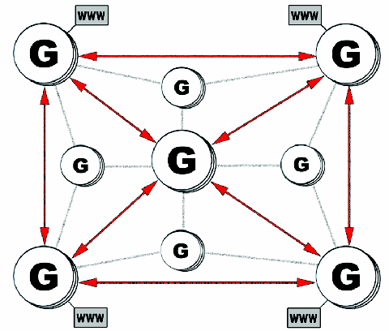

Figure 2: High-powered Media Grid nodes (indicated by the big Gs) provide storage, delivery, and processing services to other devices, including less capable devices that can only consume services (indicated by the smaller Gs) and standard web-enabled applications such as web browsers and rich clients. Red arrows denote high-speed connections between nodes, while gray and black lines depict traditional broadband connections such as DSL and cable modems.
Back to Article